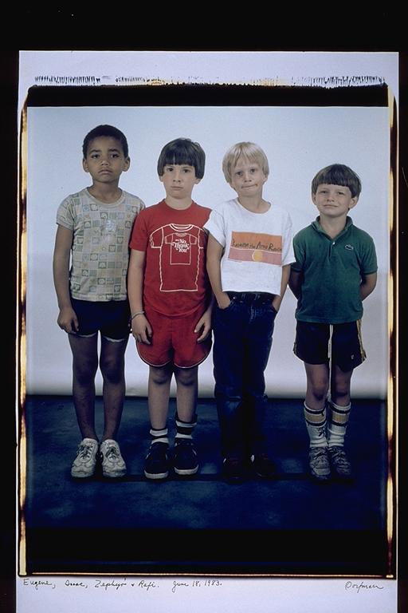

Eugene: This must have been kindergarden. The first year that Isaac and I knew each other. I was five and Isaac was six. Come to think of it, maybe Elsa's pictures are one of the reasons that we have all stayed friends. It's a stretch, but over the years we always look back on the pictures and laugh, and almost cry. We were cute. Isaac was my first best friend, Rafi was my best friend for a while in later years, and me and Zephyr were a fierce combination on the basketball court (he was always better then me:) Now we are all still good friends and I hope that we can all be together, maybe for my wedding. The last time I saw Rafi was a year or so ago on his birthday. He went his separate way from the group around 9th grade. That was unfortunate, I have many fond memories, with Rafi, Liza, Susan, Shaundi and Gram (in Marshfield)!
Aldo: Wow, to see this picture is really funny. To know everyone now as adults and to be able to see them at five and six. I think at this age, there were not any tightly bonded friendships, just kids, who were going to the same school. But almost twenty years later, to still be good friends, and to think of all that has happened in between. It's been a long road, and from this young age our friendships began to grow.
Isaac: I believe this is kindergarten. If that's the case, this is where it all started. At one point or another, I've had close one-on-one friendships with each of these guys: Zephyr and I were in the same class together and bonded over our common crush on this girl (who shall remain nameless), Rafi and I spent countless hours editing movies together in grade-school, and Eugene and I were best friends for years. At this point, at the starting line, there were no real common experiences yet. When I look at those faces I see lots of potential. Anything could have happened.
